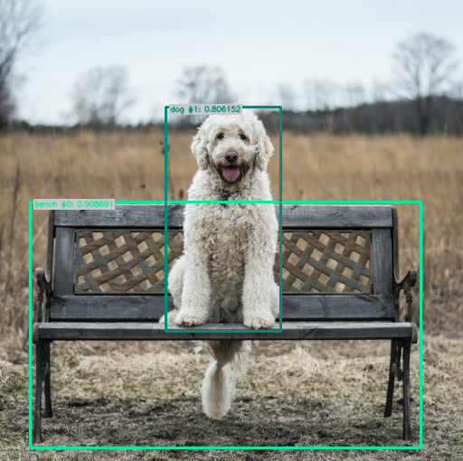
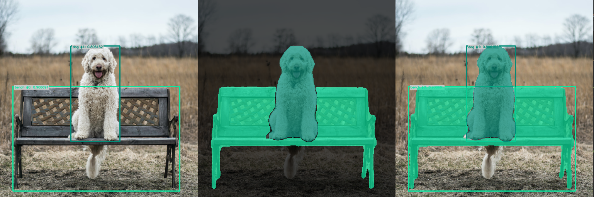
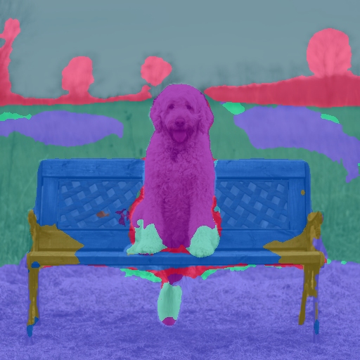
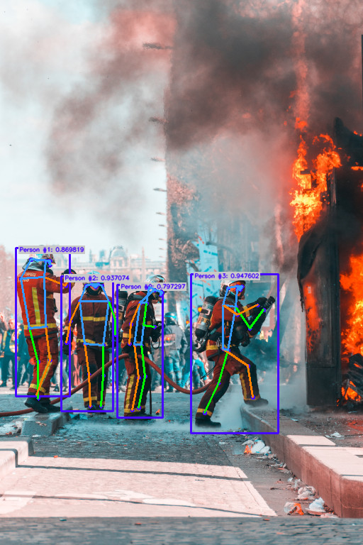

Input/Output management#
Each algorithm in Ikomia specifies a set of inputs and outputs. The type of inputs and outputs may vary depending on the selected algorithm.
This documentation provides a comprehensive list of I/O types to address common needs in Computer Vision.
Let’s take the example of YOLO v7 algorithm :
from ikomia.dataprocess.workflow import Workflow
from ikomia.utils import ik
wf = Workflow()
yolov7 = wf.add_task(ik.infer_yolo_v7(), auto_connect=True)
Important
If you use a notebook (Jupyter, Jupyter Lab or Google Colab), please copy/paste this code snippet for a better display of images.
from PIL import ImageShow
ImageShow.register(ImageShow.IPythonViewer(), 0)
Print() is your best friend#
Inputs#
print(yolov7.get_inputs())
This produces the following output :
[CImageIO(IODataType.IMAGE, CImageIO, /home/yom/Images/dog.jpg), CGraphicsInput(CGraphicsInput)]
To access inputs, you just have to do the following:
input_obj = yolov7.get_input(input_index)
If input_index = 0, input_obj is a CImageIO.
If input_index = 1, input_obj is a CGraphicsInput.
Outputs#
print(yolov7.get_outputs())
This produces the following output :
[CImageIO(IODataType.IMAGE, CImageIO, /home/yom/Images/dog.jpg), CObjectDetectionIO()]
To access outputs, you just have to do the following:
output_obj = yolov7.get_output(output_index)
If output_index = 0, input_obj is a CImageIO.
If output_index = 1, input_obj is a CObjectDetectionIO.
You can now handle each input/output according to its type.
Common I/O#
Image#
In Ikomia, an image is an object of type CImageIO and the most common function is get_image()
from ikomia.dataprocess.workflow import Workflow
from ikomia.utils import ik
wf = Workflow()
yolov7 = wf.add_task(ik.infer_yolo_v7(), auto_connect=True)
# wf.run_on(path="path/to/your/image.png")
wf.run_on(url="https://raw.githubusercontent.com/Ikomia-dev/notebooks/main/examples/img/img_dog.png")
input_obj = yolov7.get_input(0) # first input
output_obj = yolov7.get_output(0) # first output
img_in = input_obj.get_image()
img_out = output_obj.get_image()
The get_image() function returns an image as a numpy array with dimensions [HWC]. When the number of channels is 3, the color format should be RGB.
Object Detection I/O#
To better deal with Object Detection algorithms such as YOLO or EfficientDet, we provide a convenient I/O (CObjectDetectionIO) which stores all objects (CObjectDetection) with the following information:
Class label
Confidence
Bounding box
When you have a CImageIO and a CObjectDetectionIO as outputs, you can easily burn bounding boxes on your image with get_image_with_graphics()
from ikomia.dataprocess.workflow import Workflow
from ikomia.utils import ik
from ikomia.utils.displayIO import display
wf = Workflow()
yolov7 = wf.add_task(ik.infer_yolo_v7(), auto_connect=True)
# wf.run_on(path="path/to/your/image.png")
wf.run_on(url="https://raw.githubusercontent.com/Ikomia-dev/notebooks/main/examples/img/img_dog.png")
img = yolov7.get_image_with_graphics()
display(img)

If you just want the results, use :
# Get results as object
results = yolov7.get_results()
# Get results as JSON
results_json = results.to_json()
results is a CObjectDetectionIO.
If you want to iterate over the results :
# Get all detected objects
objects = results.get_objects()
# Iterate over all objects
for obj in objects:
# Do stuff here on your objects
print("==================================")
print(f"id: {obj.id}")
print(f"label: {obj.label}")
print(f"confidence: {obj.confidence}")
print(f"box: {obj.box}")
print(f"color: {obj.color}")
It will output:
==================================
id: 0
label: bench
confidence: 0.93017578125
box: [34.0, 224.0, 433.0, 270.0]
color: [12, 230, 160]
==================================
id: 1
label: dog
confidence: 0.65234375
box: [175.0, 117.0, 136.0, 250.0]
color: [2, 139, 119]
Object Segmentation I/O#
Instance Segmentation I/O#
To better deal with Instance Segmentation algorithms such as MaskRCNN or SparseInst, we provide a convenient I/O (CInstanceSegmentationIO) which stores all objects (CInstanceSegmentation) with the following information:
Class label
Confidence
Bounding box = [x, y, width, height]
Binary mask = numpy array
When you have a CImageIO and a CInstanceSegmentationIO as outputs, you can display different results :
from ikomia.dataprocess.workflow import Workflow
from ikomia.utils import ik
from ikomia.utils.displayIO import display
wf = Workflow()
yolov7 = wf.add_task(ik.infer_yolo_v7_instance_segmentation(), auto_connect=True)
# wf.run_on(path="path/to/your/image.png")
wf.run_on(url="https://raw.githubusercontent.com/Ikomia-dev/notebooks/main/examples/img/img_dog.png")
display(yolov7.get_image_with_graphics())
display(yolov7.get_image_with_mask())
display(yolov7.get_image_with_mask_and_graphics())

If you just want the results, use :
# Get results as object
results = yolov7.get_results()
# Get results as JSON
results_json = results.to_json()
results is a CInstanceSegmentationIO.
If you want to iterate over the results :
# Get all detected objects
objects = results.get_instances()
# Iterate over all objects
for obj in objects:
# Do stuff here on your objects
print("==================================")
print(f"id: {obj.id}")
print(f"type: {obj.type}")
print(f"class_index: {obj.class_index}")
print(f"confidence: {obj.confidence}")
print(f"box: {obj.box}")
print(f"color: {obj.color}")
display(obj.mask*255)
Semantic Segmentation I/O#
To better deal with Semantic Segmentation algorithms such as DeepLabV3+ or UNet, we provide a convenient I/O (CSemanticSegmentationIO) which stores the following information:
Grayscale mask = labelled image where each pixel has a specific value corresponding to its class
Class names = list associated with the semantic mask
When you have a CImageIO and a CSemanticSegmentationIO as outputs, you can overlay the mask on the image :
from ikomia.dataprocess.workflow import Workflow
from ikomia.utils import ik
from ikomia.utils.displayIO import display
wf = Workflow()
yolov7 = wf.add_task(ik.infer_hf_semantic_segmentation(), auto_connect=True)
# wf.run_on(path="path/to/your/image.png")
wf.run_on(url="https://raw.githubusercontent.com/Ikomia-dev/notebooks/main/examples/img/img_dog.png")
display(yolov7.get_image_with_mask())

# Get results as object
results = yolov7.get_results()
# Get results as JSON
results_json = results.to_json()
results is a CSemanticSegmentationIO.
If you want to exploit the results :
# Get the mask and associated class names
mask = results.get_mask()
classes = results.get_class_names()
print(classes)
# Display class number 2 = sky
mask_from_class = (mask == 2)
display(mask_from_class)
Pose Estimation I/O#
To better deal with pose estimation algorithms, we provide a convenient I/O (CKeypointsIO) which stores all objects (CObjectKeypoints and CKeypointLink) with the following information:
Keypoints:
Label
Confidence
Bounding box = [x, y, width, height]
Points = list of points (x,y)
Link:
Starting point index
Ending point index
Label
When you have a CImageIO and a CKeypointsIO as outputs, you can burn graphics on your image :
from ikomia.dataprocess.workflow import Workflow
from ikomia.utils import ik
from ikomia.utils.displayIO import display
wf = Workflow()
pose = wf.add_task(ik.infer_mmlab_pose_estimation(), auto_connect=True)
wf.run_on(url="https://raw.githubusercontent.com/Ikomia-dev/notebooks/main/examples/img/img_fireman.jpg")
display(pose.get_image_with_graphics())
